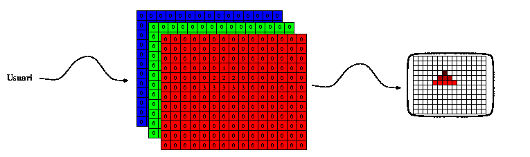

Allunyant-nos ara del component mateix que és capaç de presentar la imatge als ulls de l'usuari, cal que introduïm també algunes nocions relacionades amb els sistemes que controlen aquests dispositius. Tractant-se de dispositius raster, i donada la naturalesa de les imatges digitals rasteritzades aquests dispositius tenen una memòria específica destinada a emmagatzemar el valor d'intensitat per a cada color i pixel de la imatge, anomenada frame buffer o memòria de vídeo.
|  |
L'usuari col·loca
(directa o indirectament) valors en aquesta memòria que automàticament
es refecteixen a la pantalla al següent refresc. L'usuari hi escriu
indirectament quan el hardware li proporciona mecanismes més
abstractes per accedir-hi. Per exemple tots els controladors usats
avui dia contenen un microprocessador que enten primitives
específiques per al manegament del frame buffer, i permeten a
l'usuari d'especificar operacions abstractes que ells tradueixen en
modificacions de la memòria de vídeo. Això es denomina comercialment
"acceleració" perquè efectivament ateny velocitats més altes sempre
que les primitives proporcionades es corresponguin amb les que
necessita l'aplicació. En particular els controladors que publiciten
"acceleració 3D" entenen directament certes primitives
tridimensionals, i realitzen per tant part del
procés de visualització 3D per
hardware.